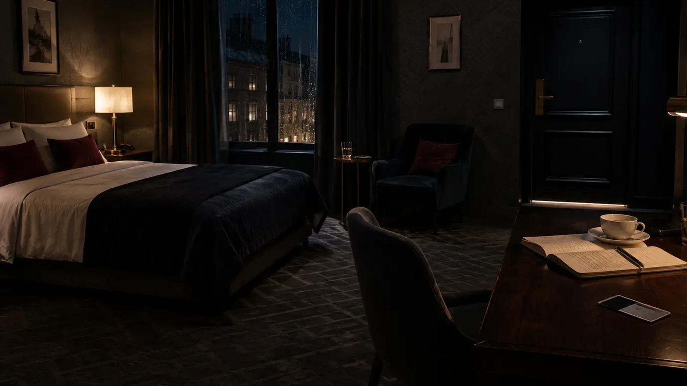

Как хотите расследовать?
Выберите формат — и сразу попадёте в подходящие дела.Новое Premium AI-расследование
Нулевая копия
Вернера находят мёртвым в Студии 3. Но позже свидетели слышат его голос. Допрашивайте пятерых фигурантов своими словами, проверяйте цифровые следы и соберите собственную реконструкцию событий.
Для ранга «Следователь» в Досье — 249 ₽ · доступ бессрочный

Ложь не равна винеНесколько людей скрывают правду. Определите, какая ложь связана с убийством, а какая — нет.
Детективные игры онлайн
Детективные
игры онлайн
15 детективных расследований бесплатно прямо в браузере. Изучайте улики, допрашивайте подозреваемых и найдите, кто врёт. Без регистрации. Есть игры для двоих.


REAL CASE Реальное уголовное дело · США · 1991
Убийство, которое оставалось нераскрытым 30 лет
17-летнюю девушку нашли смертельно раненой на пожарной лестнице жилого дома. Оружия и гильз на месте не было.
Это не выдуманный детектив. Перед вами реконструкция настоящего уголовного дела по опубликованным материалам следствия. Изучайте показания, проверяйте версии, заказывайте экспертизы и попробуйте понять, что произошло той ночью — прежде чем увидите реальный исход дела.
Девушка на пожарной лестнице
Противоречивые показания, исчезнувшие детали и слишком много вопросов без ответа.
Перейти к делуВыберите формат расследования
Для двоихПоследний звонок
Последний звонок
в 23:17
Совместное расследование.
2 игрока · 45–60 минут

Серия дел
Кто врёт?
Короткие логические дела
в удобном формате.
Архив
Посмотреть том →Первый том
Полный архив · 15 бесплатных дел
+ 85 дел в одном томе.
Большие расследования
Премиальные дела Mystery Logic
Не короткая задача на пять минут, а полноценное расследование: десятки материалов, отдельные роли, версия игрока и финальная реконструкция событий.
CASE FILE · ML-040718 материалов
Премиальное дело · одному или вдвоём
Номер 407
Тихая тревога сейфа. Запертая пустая комната. Телефон хранительницы и футляр без сапфира. Камера коридора не видела выхода — но электронные журналы и осмотр номера не складываются в одну версию.

CASE FILE · ML-AR17299 ₽
Премиальное дело · для двоих
Последняя ария
52 секунды blackout. Раненый тенор. Из закрытого нотного архива исчезает оригинальная партитура 1908 года. Восстановите события по секундам и определите, кому можно верить.
С чем вы будете работать
Запись 112
▶00:00 / 01:12
Камера
Переписка
Ты где?23:12 ✓✓
Буду через 10 минут23:12 ✓✓
Протокол
ПРОТОКОЛ ОСМОТРА
Mystery Logic · логические игры
Головоломки для детей и взрослых
20 коротких задач и отдельный Expert-каталог. Условие, проверка, подсказка и объяснение — прямо в браузере, без регистрации.
Метод игры
Не угадывайте. Проверяйте.
Три шага, которые были основой Mystery Logic: сначала отделить факты, затем найти противоречие и только после этого выбрать доказуемую версию.
Выделите факты
Разберите время, маршруты, показания и физические ограничения дела.
Найдите несоответствие
Определите, какая деталь не могла появиться из заявленного источника знания.
Восстановите цепочку событий
Сопоставьте факты и проверьте, следует ли ваш вывод из материалов дела.
Честная детективная задача уважает игрока.
Все необходимые сведения есть в материалах дела. Ключевая улика не возникает из воздуха, а решение не зависит от случайной догадки.
Определить правильную последовательность событий можно только сопоставив факты.
ML